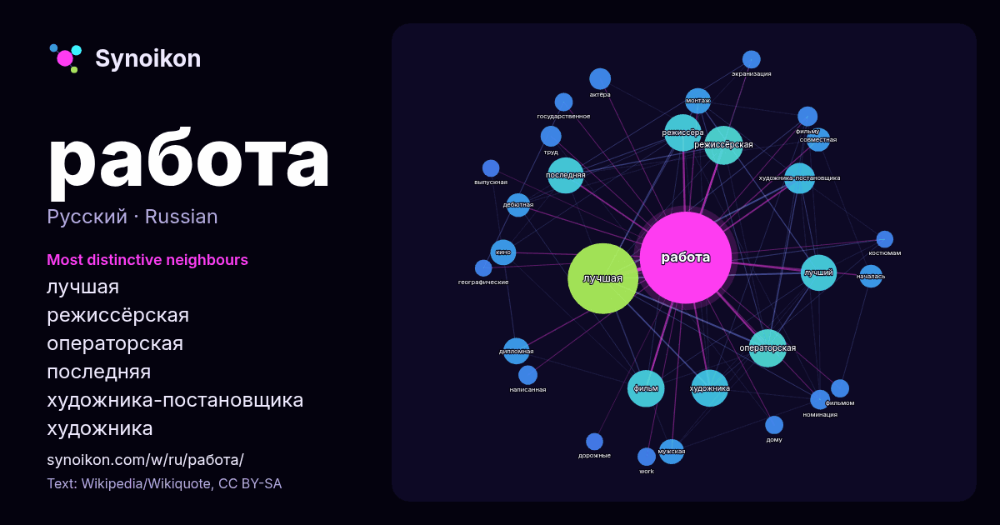

Русский · популярное слово
работа
“work” · Слова вокруг него в 1167 вхождениях из Википедии, Wikiquote.

Самые характерные соседи
- лучшая 130×
- режиссёрская 47×
- операторская 45×
- последняя 33×
- художника-постановщика 30×
- художника 29×
- режиссёра 29×
- лучший 27×
- дипломная 22×
- монтаж 20×
- мужская 19×
- дебютная 18×
- совместная 17×
- фильм 13×
- актёра 13×
- номинация 13×
- кино 12×
- фильму 11×
- work 11×
- труд 11×
× = во сколько раз чаще, чем в обычном тексте Википедии.
Самые частые соседи
- лучшая 152
- режиссёрская 46
- операторская 44
- режиссёра 42
- фильм 42
- художника 42
- лучший 40
- последняя 40
- художника-постановщика 29
- дипломная 21
- кино 20
- монтаж 20
- мужская 19
- является 19
- дебютная 17
- первая 17
- совместная 17
- началась 16
- актёра 14
- труд 13
В контексте
- Рабо́та: Работа, или труд — деятельность человека, направленная на создание ценностей либо на удовлетворение потребностей индивида и других людей. Работа — Wikipedia snippets · Работа
- Arbeit — работа, труд) или заглавной буквой W {\displaystyle W} (от англ. work — работа, труд). Единицей измерения (размерностью) работы в Международной Wikipedia snippets · Механическая работа
- Дипло́мная рабо́та (дипло́мный прое́кт) — один из видов выпускной квалификационной работы (ВКР) — самостоятельная итоговая творческая работа студентов Wikipedia snippets · Дипломная работа
- «Социальная работа в системе образования; «Социальная работа в системе здравоохранения; «Социальная работа в вооружённых силах»), специализации работы с конкретными Wikipedia snippets · Социальная работа
- Projekte («серые проекты»). О. Смоляк считает, что термин «работа на себя» предпочтительнее, чем «работа налево», «калым», «шабашка» с их мотивом обогащения Wikipedia snippets · Работа на себя
- полученных знаний, поиск и исследование темы. Работа рассчитана на инициативу студента. Отчётная. В основном, работа, которая не требует приложения значительных Wikipedia snippets · Курсовая работа
- Сменная работа (работа по сменам) — один из видов графика (распорядка) трудовой деятельности, в котором время работы в течение суток в разные рабочие дни Wikipedia snippets · Сменная работа
- «Работа без авторства» (нем. Werk ohne Autor, в американском прокате — «Не отводи взгляд» (англ. Never Look Away) — немецкий эпический драматический фильм Wikipedia snippets · Работа без авторства
Другие слова
- бог
- власть
- вода
- деньги
- жизнь
- здоровье
- золото
- искусство
- истина
- история
- климат
- кошка
- мост
- наука
- пища
- поезд
- природа
- семья
- сердце
- смерть
- собака
- язык
Предварительно рассчитано 2026-10-09 с настройками по умолчанию (±5 слов, средний корпус). Интерактивная карта может обновить данные в реальном времени.
Интерфейс переведён машинно; исправления приветствуются.